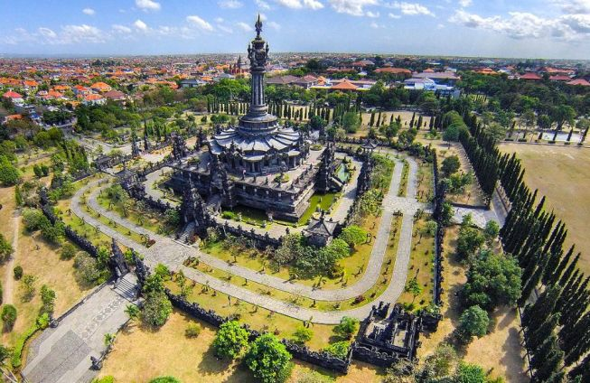
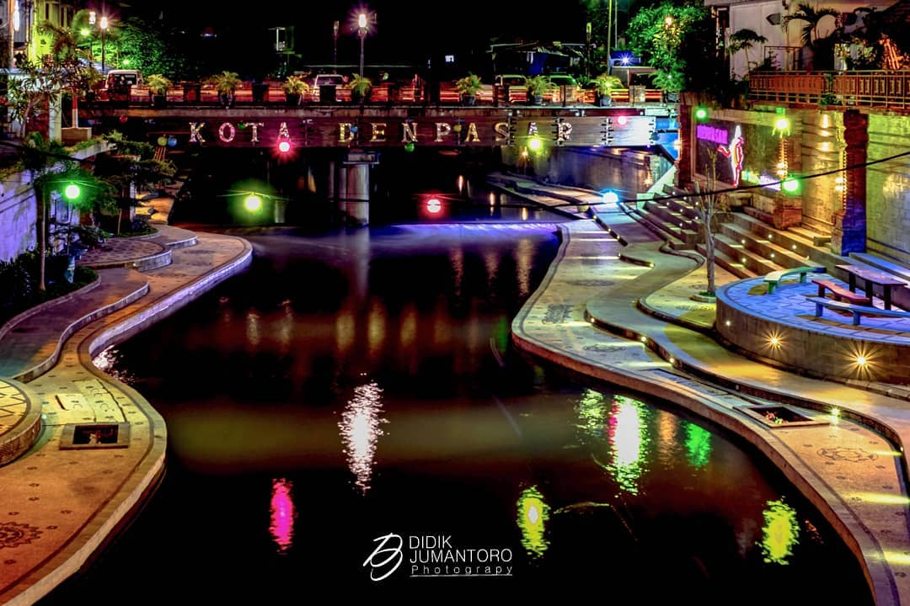
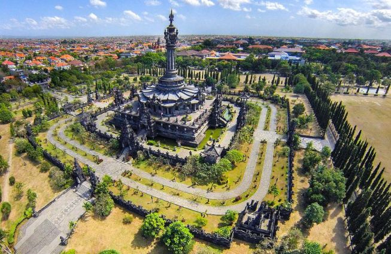
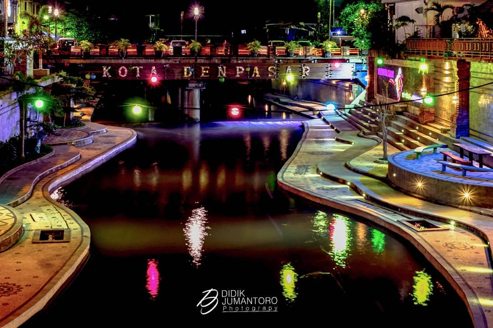
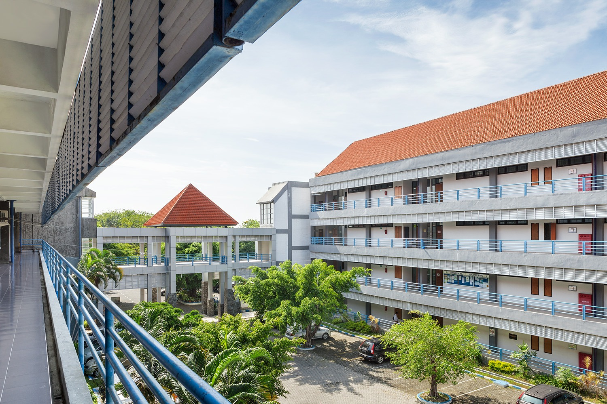

Nama
Halo, perkenalkan nama saya I Kadek Wahyu Dwi Pranatasana atau yang biasa dipanggil Wahyu. Teman saya yang berasal dari luar Bali
biasanya penasaran dengan arti nama saya. Dalam penamaan seseorang di Bali, "I" berarti anak laki-laki dan "Kadek" merujuk pada
urutan kelahiran yaitu anak kedua. Kedua unsur nama ini melekat dalam nama seseorang di Bali yang kemudian diikuti oleh nama
pemberian orang tua.
Tempat, Tanggal Lahir
 



Kota Denpasar, ibukota dari Provinsi Bali, merupakan tempat kelahiran saya. Saya lahir pada hari Senin tanggal 9 September 2002 jadi saat ini saya
sudah berumur 19 tahun.
Denpasar adalah salah satu kabupaten yang ada di Provinsi Bali. Kota dengan maskot bunga jempiring ini memiliki luas daerah
124 km2 dan populasi 897.300 pada tahun 2017. Salah satu tempat iconic dari Denpasar adalah Bajra Sandhi
yang merupakan monumen perjuangan rakyat Bali yang terletak di daerah Renon. Adapun Tukad Badung, sungai yang melintasi Badung
dan Denpasar juga menjadi salah satu tempat wajib dikunjungi karena keunikannya.
Fakultas

Fakultas Teknologi Elektro dan Informatika Cerdas adalah fakultas unggulan di ITS yang didirikan sebagai gabungan dari Fakultas
Teknologi Informasi dan Komunikasi (FTIK) dan Fakultas Teknologi Elektro (FTE) yang terdiri dari 6 Departemen dengan lebih dari
2500 mahasiswa baik di tingkat S1, S2 ataupun S3. FTEIC hadir dengan visi membentuk sumber daya manusia berkarakter, berbudi
unggul serta berkelas dunia dalam bidang teknologi elektro, sistem informasi, biomedik, komputer, informatika dan teknologi informasi.
Departemen

Saat ini saya menempuh pendidikan tinggi S1 di Departemen Sistem Informasi ITS, Surabaya. Departemen Sistem Informasi berada di bawah Fakultas
Teknologi Elektro dan Informatika Cerdas. Sistem informasi memiliki visi menjadi pusat keunggulan dalam pendidikan bidang sistem informasi,
terutama pada penerapan dan aplikasi desain dan pengembangan sistem informasi, sistem pendukung keputusan dan intelijen bisnis. Mahasiswa
Sistem Informasi disiapkan menjadi manusia yang terampil dalam merancang dan menganalisis kebutuhan sistem informasi untuk organisasi,
merancang pengembangan proyek dalam konteks sistem informasi secara komprehensif menggabungkan aspek infrastruktur IT (teknologi informasi),
seperti hardware, software, jaringan, data, hirarki organisasi, proses dan prosedur, serta tak lupa sumber daya manusia dan budaya,
dan kebijakan dan regulasi. Para mahasiswa juga disediakan dengan kemampuan keterampilan dasar dan kemajuan dalam penerapan dan pengembangan
software, infrastruktur jaringan, pemeliharaan sistem manajemen informasi dari organisasi.